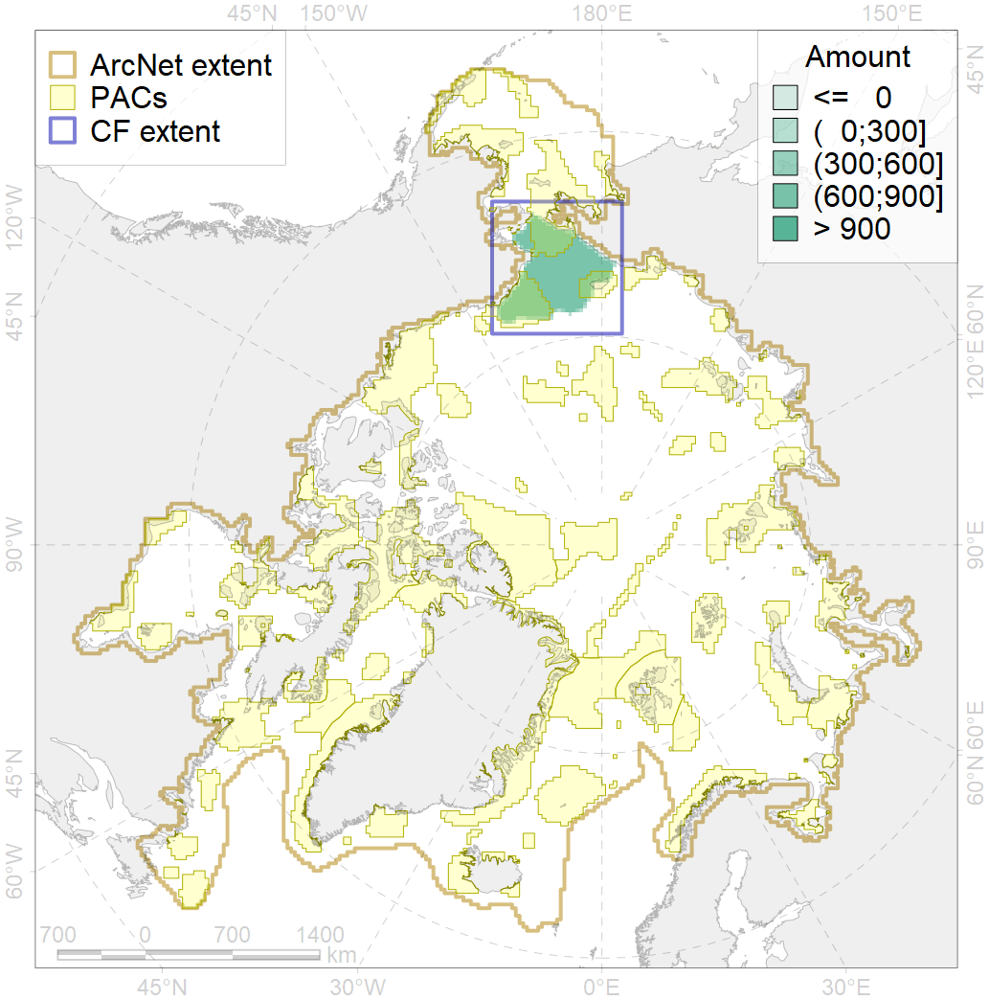
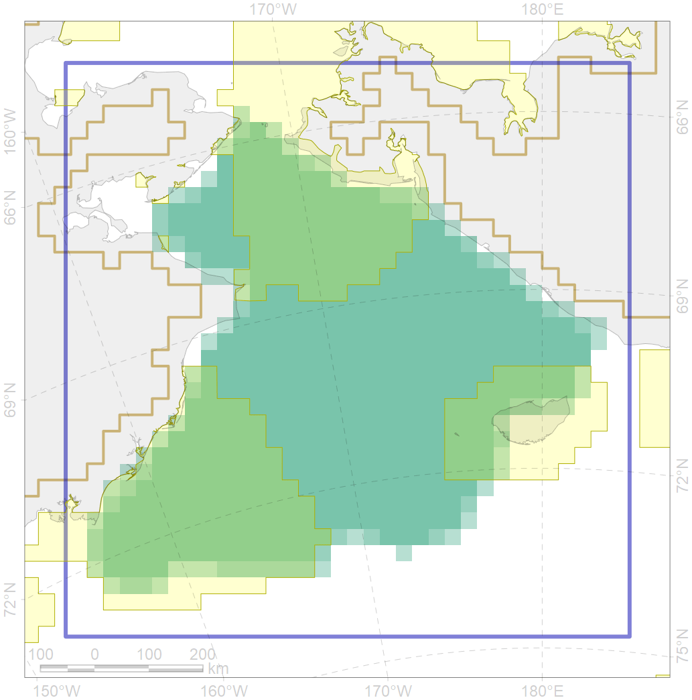

2035

| CF code | 2035 |
| CF name | Ribbon seal foraging areas in the Chukchi Sea |
| Time Period | Varies by dataset |
| Source(s) | Smith et al 2017; surrogate data |
| Seasonality | June-December |
| Depth Horizon | 0-600 m |
| Methodology | Data compilation, expert input |
| Use Restrictions | Open source |
| Author Name | Irina Trukhanova |
| Notes | |
| Scenario’s Target | 0.12 |
| Target Achievement | 0.434 (Scenario: 361.4%) |
| PAC | Share of the Total Amount within the PAC | Share of the Target Achievement for the ArcNet | PAC’s Contribution to the Target Achievement |
|---|---|---|---|
| 5 | 16.6%16.8% | 125.9%126.6% | 34.8%35.0% |
| 6 | 0.0%0.0% | 0.0%0.0% | 0.0%0.0% |
| 7 | 6.1% | 49.0% | 13.5% |
| 60 | 22.2%22.5% | 172.4%173.0% | 47.7%47.9% |
| inner | 44.9%45.4% | 347.2%348.6% | 96.1%96.5% |
| outer | 55.1%56.3% | 14.1%18.4% | 3.9%5.1% |
| † supplement values are for area consistence whereas principal values are for Accenter compatible gridded stats |